Perlune looks like glossy sculpture floating in a neon-lined night: a droplet of liquid metal, glass and magnetic dust with two big eyes, tiny ringed worlds, and the Eclipse at the centre of everything. Everything in the game is drawn by its own WebGL renderer; this sheet is read from that renderer's key art, cover and frames, and every rule below is one the renderer already follows.
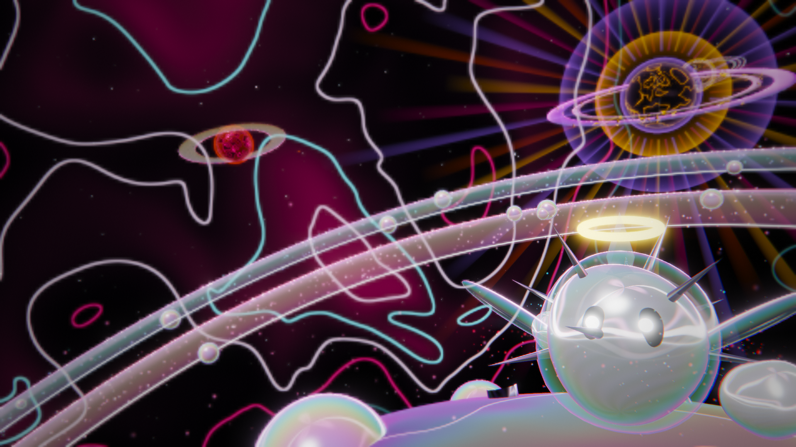
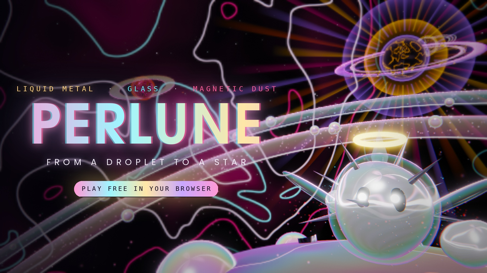
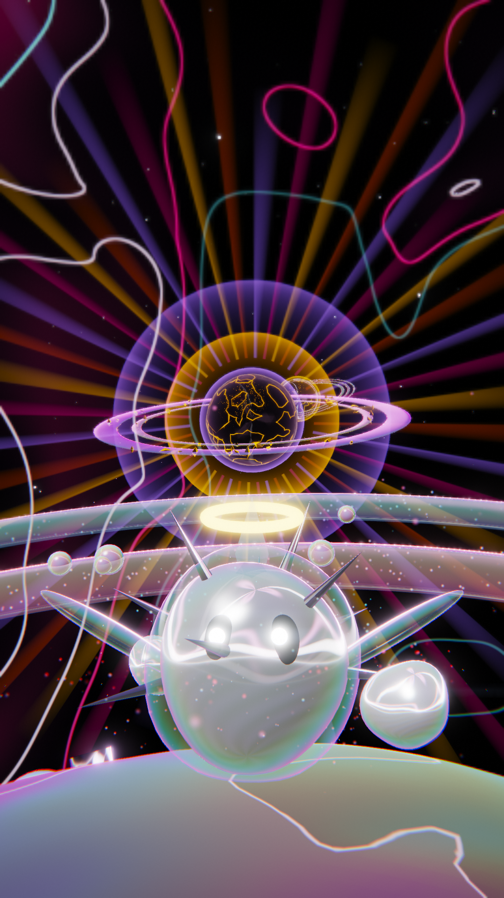
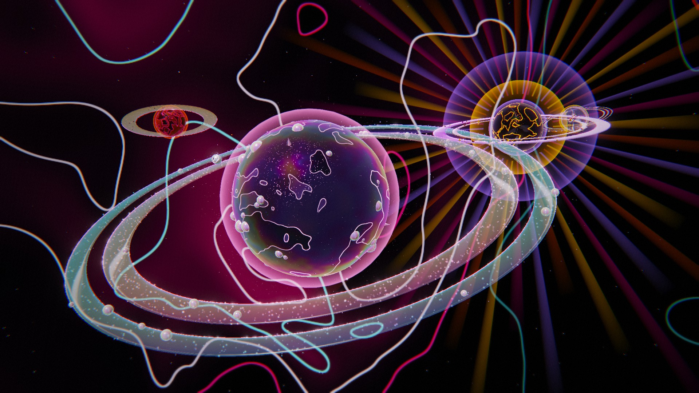
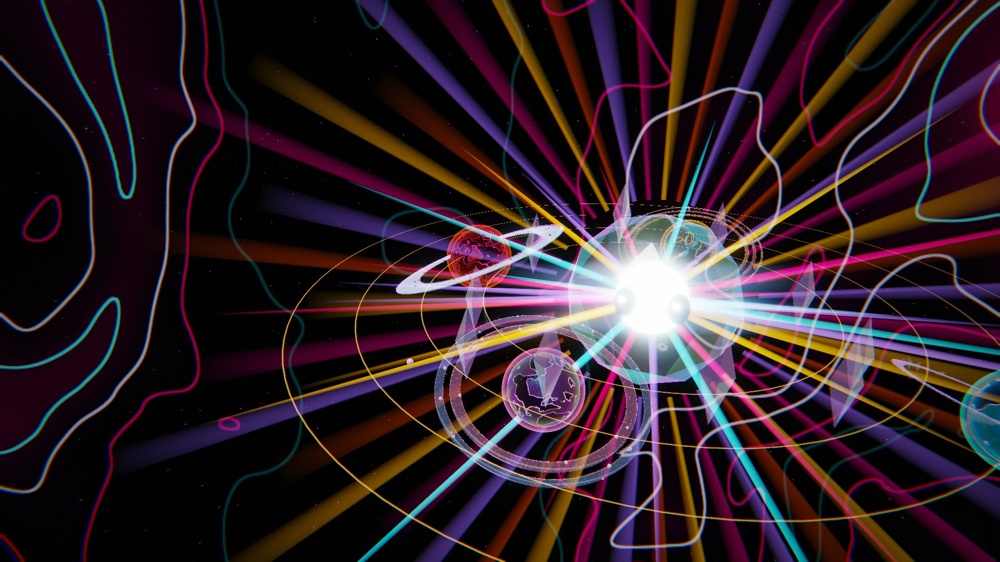
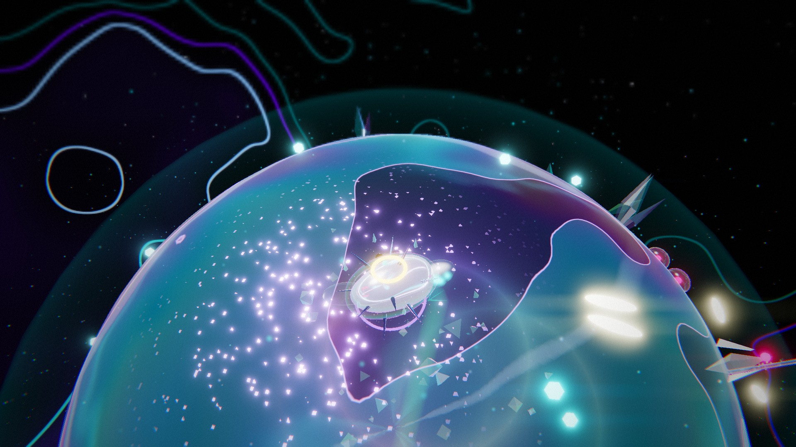
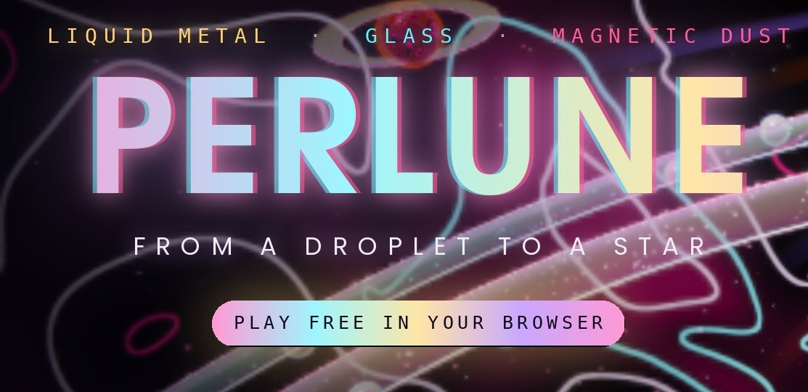
The iridescent sweep's own stops: #FF9AD5 (lilac 18.8 caution) · #9FF6FF (free) · #FFE6A8 (sun 11.2 GUARDED) · #C9A8FF (lilac 4.3 GUARDED). They stay on the key art and cover, as gradients and glows, never as flat fills. Ferrum's orange #FF7A2B measures ember 10.7 GUARDED: it stays inside planet art, never near a button.
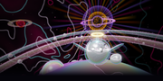
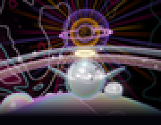
Rendered in the game's own engine with a posed camera, a cleared scene and the sky's contour lines at half strength, then finished: vignette, plain strip. light: L 0.177 C 0.079 dark. The Eclipse's guarded golds sit in the middle of the plate, more than 15 % in from the right edge where the hero's info rail starts.
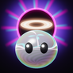
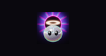
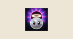
Last survivors only: the head, two eyes, the halo, the Eclipse behind. Drawn with the game's material maths ported from its shader (studio reflection, thin film, specular), at 8× and reduced. Near-UI set only: halo #FFC2A8, rim #FF3FB4, aura #8F6BFF. light: L 0.323 C 0.216 mid.
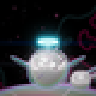
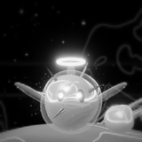
A trim, not the identity core: the halo the droplet grows at its third stage turns to clear cyan glass (#7FE8FF, free). Rendered in the engine on Nacre's ground, sky quieted, scenery cleared. No gold, no lilac, nothing near the price row. price: UNDECIDED (Q1). The game would have to build this look.